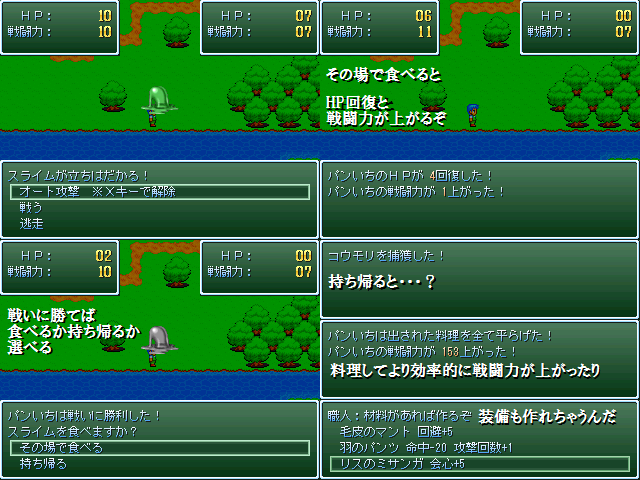

 |
|
| 作者：F-man | |
| ジャンル：ハンティングRPG | |
| ツクール：2000 | |
| 作者コメント： イーターランドに生息する生き物は全て獰猛で生存競争が激しく、 島の生き物を食べるだけで強くなると言われる。 故に強さを求める求道者達は島に訪れ、ある者は一騎当千の強さを身に付け、 ある者は哀れにも自ら餌となって島の養分と化した。 パンいちはある思いを胸に強くなる為イーターランドに訪れた。 本作は1VS1の自作戦闘で非常にシンプルで、 弱肉強食の世界でインフレする強さを楽しむだけです。 喰えば喰うほど溢れるパワー！ |
|
| 管理人コメント： 肉を食べても変身はしないみたいですね。 |
|
| ダウンロード(4.39MB) / 感想掲示板 | |
| 前の作品 / 次の作品 / TOPへ戻る | |